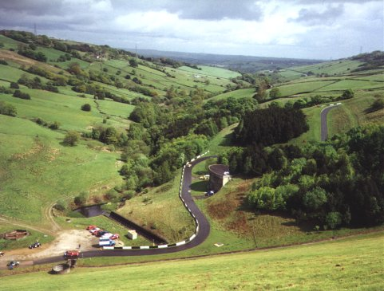
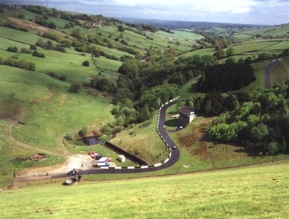
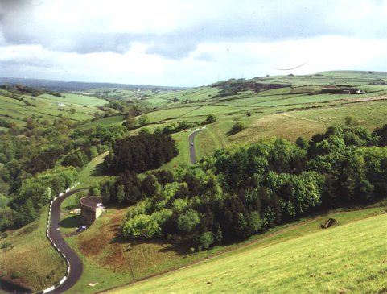
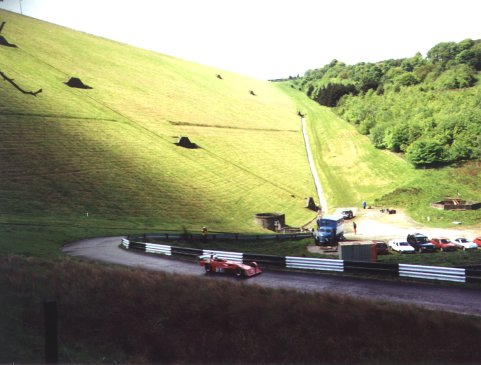
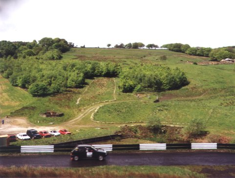
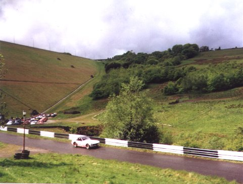
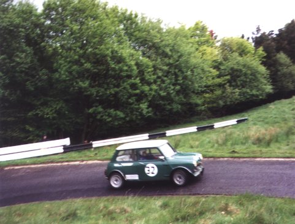
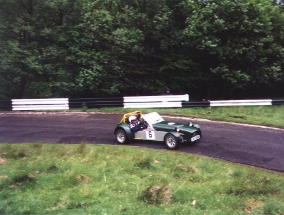

Scammonden Hillclimb
Photographs taken on the 18th May, 2003 at an event organised by the MG Car Club (North Western Centre)
PAGE 1 || PAGE 2 || PAGE 3








©2003 Daniel King. All Rights Reserved.